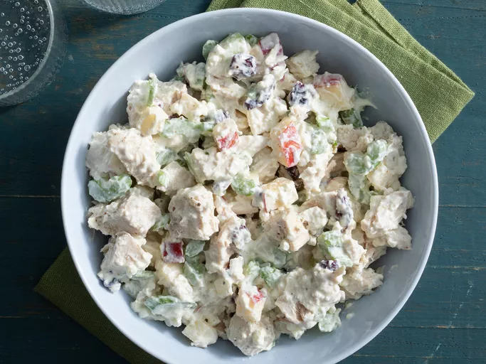

Chicken Salad

Description
This is a recipe for cooking a healthy chicken salad
This healthy chicken salad starts with a surprising ingredient: fat-free Greek yogurt! The lighter take on a classic potluck dish will become a staple in your recipe box.
Ingredients
- 1 (6 ounce) container fat-free Greek yogurt (such as Fage®)
- ½ cup low-fat cottage cheese
- ½ cup chopped celery
- ½ cup diced apple
- ¼ cup sweetened dried cranberries (such as Craisins®)
- 2 tablespoons chopped onion
- 2 tablespoons chopped pecans
- ½ tablespoon Dijon mustard
- 1 ¼ cups cubed, cooked chicken
- salt and ground black pepper to taste
Steps
- Gather all ingredients.
- Stir Greek yogurt, cottage cheese, celery, apple, cranberries, onion, pecans, and Dijon mustard in a bowl until well combined.
- Mix in chicken. Season with salt and pepper.
- Enjoy!